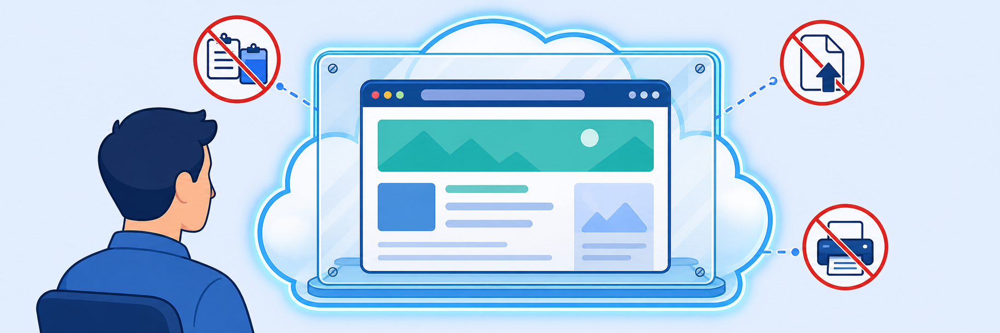

Lab 7: ZPA Zero Trust Browser
Scenario: Your organisation allows contractors to access the internal DVWA application through a browser without installing the Zscaler Client Connector. You need to ensure that these clientless users get a render-only view — they can see and interact with the app, but cannot download files, copy sensitive data, or upload malicious content to the endpoint. You will configure ZPA Browser Isolation with a render-only profile and validate the controls on the endpoint.

ZPA Browser Isolation renders the application in a cloud browser — only pixels travel to the endpoint. Before configuring it, think about the security model it enforces and how isolation policies differ from access policies.
- In a render-only session, the application UI is streamed as pixels to the user's browser. No files, DOM content, or clipboard data leave the cloud browser. Why is this a stronger control than blocking specific file-download MIME types at a proxy?
- The Isolation Profile controls copy/paste, upload, download, and printing. The Isolation Policy controls which sessions get isolated. What happens if a user matches the Isolation Policy criteria but you set Rule Action = "Bypass Isolation" instead of "Allow Isolation"?
- You set Watermark = Disabled in the Isolation Experience. In what operational scenario would you enable the watermark, and what does it protect against?
An Isolation Profile defines the security controls applied during a browser isolation session — what users can and cannot do in the cloud browser. You will create a render-only profile that disables data transfer but allows viewing office files.
- In the Experience Center, navigate to Policies > Access Control > Clientless > Browser Isolation > Profiles.
- Select Add to create a new profile.
- Under General, enter:
- Name:
render_only_profile - Turbo Mode: Enabled
- Name:
- Under Company Settings, leave all values at their defaults.
- Under Security, configure the controls:
- Copy: Disabled
- Paste: Disabled
- Upload: Disabled
- Download: Disabled
- Print: Disabled
- View Office Files in Isolation: Enabled (leave this one on)
- Under Regions, select Select All to allow isolation from any Zscaler data centre region.
- Under Isolation Experience, leave defaults:
- Browser Experience: Native browser experience
- Watermark: Disabled
- Select Save.
An Isolation Policy determines which sessions are sent to the cloud browser. You will create a policy that routes Web Browser clients accessing the DVWA app segment through the render-only isolation profile you created in Task 7.1.
- Navigate to Policies > Access Control > Clientless > Browser Isolation > Isolation Policy.
- Select Add to create a new policy rule.
- Configure the rule:
- Policy name:
isolate_policy_render_only - Rule Action: Allow Isolation
- Isolation Profile:
render_only_profile(the profile created in Task 7.1)
- Policy name:
- Under Criteria, configure:
- Client Types: Web Browser
- Applications: Select the
DVWAapp segment
- Select Save.
- Verify the policy rule appears in the Isolation Policy list with Status = Enabled.
Note: The Isolation Policy evaluates against Client Types. Selecting "Web Browser" ensures the policy applies to clientless users accessing DVWA through Browser Access. Users with ZCC installed would match a different client type and could be exempted if needed.
With the isolation profile and policy in place, you will simulate a clientless user accessing DVWA through Browser Access and verify that the render-only controls are enforced.
Step 1 — Disconnect ZCC
- On Corp: Client PC 1, right-click the Zscaler Client Connector icon in the system tray and select Sign Out (or Disconnect).
- This simulates a clientless user — no ZCC tunnel is active, so the user must access private apps through Browser Access.
Step 2 — Access DVWA via Browser Access URL
- Open a browser and navigate to the DVWA Browser Access URL. You can find this in the App Segment details under the Access Method > Browser Access section — it will be in the format
https://dvwa-<studentid>.labtenant.com.clientless.two.zscalerportal.net. - You will be redirected to the SAML IdP for authentication. Sign in with your student admin credentials.
- After authentication, the DVWA application loads in the cloud browser isolation session. Confirm you can see the DVWA login page rendered in the browser with a Zscaler banner or render-only indicator.
Step 3 — Validate Render-Only Controls
- Log in to DVWA with credentials admin / password.
- Try to copy text from the DVWA page — the clipboard operation should be blocked.
- Try to right-click and access browser context menus — these may be restricted or limited.
- Navigate to DVWA Security > File Upload. Attempt to upload a file. The page should show "Protected Storage is empty" — the cloud browser has no access to the local filesystem, so no files can be selected for upload.
- Try to print or use Ctrl+P — print functionality should be disabled.
- Confirm the Zscaler isolation banner is visible on the page, indicating the session is running through browser isolation.
Expected result: Users can VIEW and interact with DVWA content through the cloud browser, but cannot download files, upload files from the endpoint, copy application data to the local clipboard, or print. The isolation profile's render-only controls are enforced at the cloud browser layer.
- Pixels Only: ZPA Browser Isolation separates the rendering engine from the endpoint — only pixels reach the user's browser, enforcing data-loss controls without a client agent.
- Profile vs Policy: The Isolation Profile defines what is restricted; the Isolation Policy defines which sessions are isolated.
- Strictest Posture: Render-only mode (all transfer controls disabled) — users can view and interact but cannot exfiltrate data in any direction.